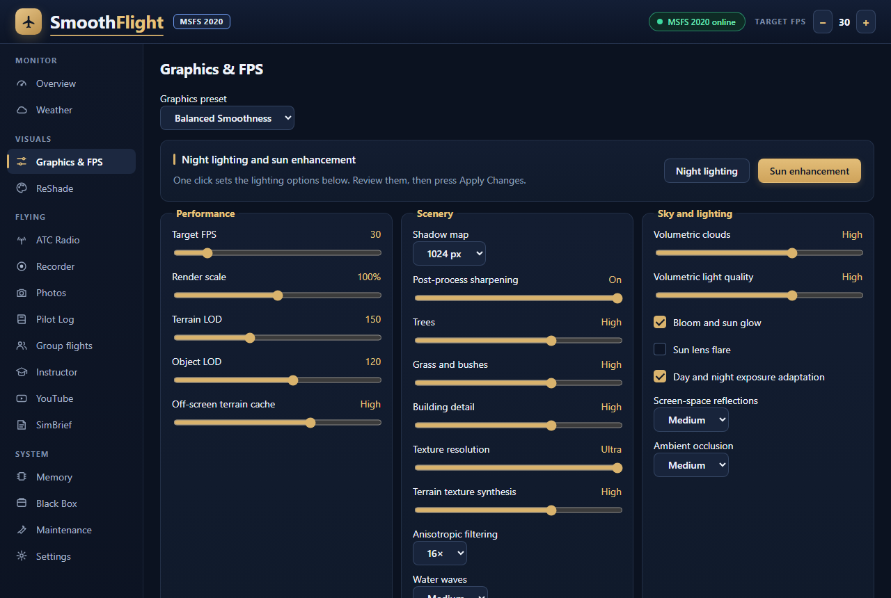

Live and average FPS, frame time, GPU time, CPU and memory, with advice when something is the limit.
Trees, clouds & light
Five-step controls for trees, grass, clouds, night lighting and sun, from Lowest to Highest.
Graphics profiles
Smooth flight, Balanced or Scenery detail in one click, applied again every time you start.
ReShade presets
Switch between your ReShade looks from inside the sim.
Weather
Wind, visibility, temperature, pressure and cloud layers, plus ready-made presets.
ATC radio
Frequencies for the nearest airport, tuned to COM1 or COM2 with one click.
Recording & screenshots
Save your track for Google Earth, use replay controls, and take screenshots without the window in the shot.
Pilot log
Every flight logged automatically: aircraft, airports, times, landing rate, pitch, bank and crosswind, with optional AI remarks.
AI Instructor & charts
Lessons for the aircraft you fly, a chat with an instructor who knows your flight, and airport charts (runways, frequencies, SIDs) drawn from the simulator with an AI briefing. Runs privately on your PC.
AI ReShade presets
One click and the AI designs three named looks, saved next to your other ReShade presets so you can use them any time.
YouTube while you fly
Latest videos from flight-sim channels, in a small window you can move anywhere on screen during long flights.
SimBrief flight plan
Your latest SimBrief OFP inside the sim: times, fuel, weights, weather, navlog, maps and the full plan, synced from your pilot ID.
Region profiles
The launcher groups scenery by continent. Load only the region you're flying to save memory.

Graphics & FPS: one-click lighting looks and every setting in one place.
Mission
Build a virtual flying career.
Generate contracts, dispatch with SimBrief, track your flight, and review your landing in the career logbook. Spend your virtual earnings at Flightline Supply.
The same navy-and-gold design in the MSFS toolbar panel and the X-Plane window. Click a picture to see it full size.
Performance dashboardLive FPS, frame timing and system load.Graphics & FPSOne-click looks and every setting in one place.ReShade & AI presetsAI-designed looks that switch while you fly.WeatherWind, visibility, temperature and pressure at the aircraft.AI InstructorLessons written for the aircraft you fly.Airport chartRunways, frequencies and procedures from the sim, with an AI briefing.SimBriefYour latest flight plan: times, fuel, weights and more.YouTubeFlight-sim videos in a small window while you cruise.Pilot logEvery flight logged automatically.Flight detailTouchdown numbers, the approach and AI remarks.Landing pop-upYour landing rate, the moment you touch down.MemoryRAM, memory budget and background apps.Black BoxLow FPS, frame-time spikes and VRAM warnings, recorded.SettingsUpdates, AI model, SimBrief ID and YouTube channels.
Performance dashboardLive FPS, frame timing and system load.FlightPosition, speed, attitude and time, live.Graphics & FPSGraphics profiles and upscaling.Trees, clouds & lightFive-step controls, changed live.ReShadeSwitch presets without leaving X-Plane.WeatherConditions at the aircraft and cloud presets.ATC radioNearby frequencies with one-click tuning.RecordingSave your track and replay it.Pilot logEvery flight logged automatically.Flight detailTouchdown numbers, the approach and AI remarks.Landing pop-upYour landing rate, the moment you touch down.AI InstructorLessons written for the aircraft you fly.Ask the instructorA chat that knows your altitude, speed and wind.Airport chartRunways, frequencies, SIDs, STARs and approaches from X-Plane, with an AI briefing.SimBriefYour latest flight plan inside X-Plane.SimBrief navlogEvery waypoint with altitude, wind, time and fuel.YouTubeFlight-sim videos in a small window on top of X-Plane.MemoryRAM, graphics memory and background apps.Add-onsTurn plug-ins on or off.SettingsUpdates, AI model, SimBrief ID and YouTube channels.
Mission BoardBrowse generated contracts with airport, aircraft, and payout details.Active FlightTrack the flight and view the SimBrief operational flight plan.Career LogbookReview landing metrics, payouts, and the AI debrief.Flightline SupplyBrowse flight gear, electronics, apparel, and meals.All-weather pilot apparelShop pilot shirts and hats for hot, mild, cold, and wet conditions.Virtual checkoutReview items and pay with the career balance.Order receiptSee itemized purchases and the remaining virtual balance.Airport taxi mapFollow the aircraft marker while taxiing and browse published procedures.
Sample flights and data shown. Created by Erick Omari.
Pilot log
Every landing, scored and explained.
Each flight is saved automatically. Open any previous flight to see exactly how it touched down.
• Landing rate, G-force, pitch, bank, speed, float time, bounces and head- and crosswind at touchdown.
• The last minutes of the approach as a chart of height and vertical speed.
• AI remarks on request from Ollama, running privately on your own PC. Nothing is uploaded.
• Your landing rate pops up on screen, with its grade, the moment you touch down.
Butter< 100 fpm
Smooth< 240 fpm
AILocal, free
Touch down and your landing rate counts up on screen, in X-Plane 12 and MSFS alike.
Memory guard
Fewer out-of-memory crashes.
Long flights with heavy scenery can fill Windows' memory budget until the simulator crashes. SmoothFlight watches it for you.
• Frees RAM held by idle background apps when memory passes 90%. They keep running.
• Shows your heaviest background apps, with a button to close each one.
• Can close the apps you choose automatically before every flight.
• Warns you before the memory budget (RAM + page file) runs out.
Unzip and double-click Install-SmoothFlight-MSFS.exe. It finds MSFS 2020 and/or 2024 (Store, Game Pass or Steam).
Start the companion from the desktop, then open SmoothFlight from the sim's toolbar.
Windows 10/11 (64-bit) and MSFS 2020 and/or 2024. Nothing else to install.
↻
Updates itself. When a new version is released, the launcher and the X-Plane dashboard show an Update button. It downloads, verifies and installs the update for you, and keeps your settings.
FAQ
Questions
Does SmoothFlight change my simulator files?
The launcher turns scenery and packages on or off. In X-Plane that means editing scenery_packs.ini; in MSFS it moves package folders between Community and Community.Disabled. It backs up before every change. Graphics controls in X-Plane apply live and reset when X-Plane restarts, and SmoothFlight re-applies the ones you chose.
Will closing background apps lose my work?
Apps with a window are asked to close normally, just like clicking their X, so they can ask you to save. Windows itself, your antivirus, your drivers and your simulator are never on the list, and nothing closes unless you chose it.
Why does the MSFS version need a companion app?
MSFS doesn't let toolbar panels read your PC's performance or change graphics settings. The companion runs quietly in the background and does that for the panel. It only accepts requests from your own PC.
Do I need XPlane Map Enhancement or MSFS Map Enhancement?
No. If you have it, the launcher can open it and start the simulator through it. Without it, use Start X-Plane or Start MSFS.
How do updates work?
The tools check this project's latest release for a newer version. When you click Update, the package is downloaded, its checksum is checked against the published one, and its installer runs. Your profiles, settings and pairing are kept.